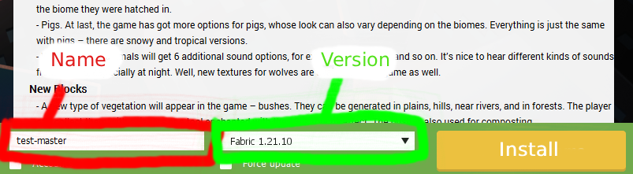
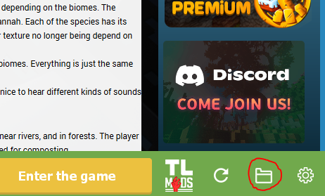
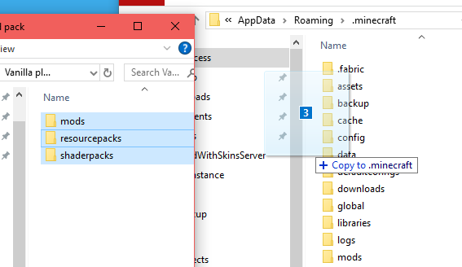

Minecraft Fabric Setup — Quick One‑Page Guide
-
1
Download and install TLauncher
Get TLauncher from the official site and run the installer.
-
2
Install Java 25 (Windows x64)
Download Java 25 from Oracle's archive and run the Windows x64 installer by double‑clicking it.
https://www.oracle.com/java/technologies/javase/jdk25-archive-downloads.html
-
3
Install Fabric profile in TLauncher
Open TLauncher, enter your username (bottom left), choose the Minecraft version
fabric-1.21.10from the versions dropdown, and click Install. -
4
Copy mods, resource packs & shaders
Download the modpack archive from my Google Drive
Now copy the three folders into the Fabric profile folder that TLauncher opens when you press the folder icon (bottom right).
Replace any conflicting folders.
 -
5
Set memory and run
In TLauncher: Settings → Minecraft settings and set Memory allocation to
6–8 GBdepending on your system. Then press Play. -
6
Add the server and connect
Open Multiplayer → Add Server, give it a name and use this address:
34.35.146.5:25566Save and join. If you have trouble connecting, check that your client Fabric profile matches server Fabric version.